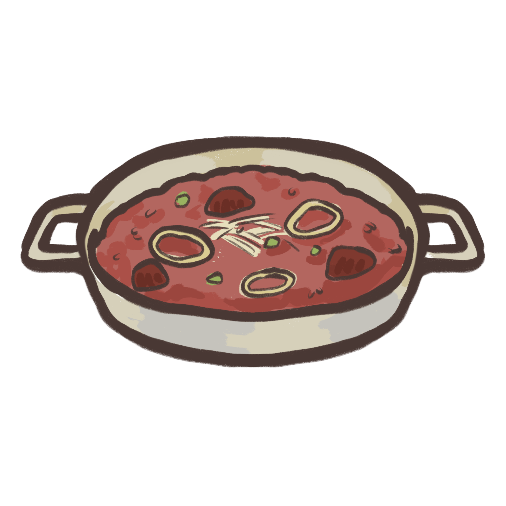

Ingredients
- Beef Osso Bucco2.2 kg
- Plain flour2 tbsp
- Dried Italian herbs2 tbsp
- Olive oil2 tbsp
- Brown onion1
- Celery sticks3
- Garlic cloves2 pc
- Red wine250ml
- Salt-reduced beef stock250 ml
- Carrot1
- Crushed tomatoes2x400g cans
- Dried bay leaves2 pc
- Rice150g
- Sicilian green olives80g
- Rosemary sprig2
- Finely grated lemon zest2 tbsp
- Finely grated parmesan40 g
Risotto is an Italian rice dish cooked with broth until it reaches a creamy consistency. The
broth can be derived from meat, fish, or vegetables. Many types of risotto contain butter,
onion, white wine, and Parmesan cheese. It is one of the most common ways of cooking rice in
Italy.
How to cook:
| 1. | Preheat oven to 160°C. Place the beef, flour and Italian herbs in a large bowl. Toss to coat. Season. Heat oil in an 8-cup (2L) ovenproof casserole pan over medium-high heat. Cook the beef, in batches, for 2 mins each side or until browned. Transfer to a plate. |
| 2. | Add the onion, carrot, celery and garlic to the pan. Cook, stirring, for 2 mins or until the onion softens slightly. Add wine. Bring to a simmer. Cook for 5 mins or until wine reduces slightly. Stir in the stock, crushed tomatoes and bay leaves. Return the beef to the pan. Cover and bake for 2 hours. |
| 3. | Transfer the beef to a plate. Stir the rice into the tomato mixture. Return the beef to the pan. Bake, covered, for 40 mins or until the beef and rice are tender. Stir in half the olive. Top with the remaining olive, rosemary, lemon zest and parmesan. |